02. คอขวด และ ParallelStation
วัตถุประสงค์การเรียนรู้
- แสดงชื่อ Object และวาง Display / Chart บนไลน์ผลิต 5 สถานีได้
- หาคอขวดจากสีของ Chart (Working / Blocked / Waiting) ได้
- แก้คอขวดด้วยเครื่องขนาน หรือ ParallelStation และรู้จักกับดัก Start Processing When Full
ต่อจากบท 01 — ใช้ไลน์ผลิต 5 สถานีที่จะใช้ไปตลอดชุดสอน อ่านผลจาก Display และ Chart หาเครื่องที่ช้าที่สุด (คอขวด) แล้วแก้ 2 วิธี: เพิ่มเครื่องขนาน หรือใช้ ParallelStation ตัวเดียว ทั้งหมด 11 ขั้น ไม่ต้องเขียนโค้ด
| ลำดับ | หัวข้อ | ทำอะไร | ขั้น |
|---|---|---|---|
| 1 | เปิด Frame Model | ไลน์ 5 สถานี เวลาเท่ากัน 0:10 | 1 |
| 2 | วาง Display + Chart | จาก Toolbox แล้วลาก object มาวาง | 2–3 |
| 3 | รัน Model อ่านผล | FG 355 ทุกแท่งสีเขียว | 4 |
| 4 | Model2 มีคอขวด | Station3 ช้าเป็น 0:20 ได้ 177 | 5 |
| 5 | Model3 เพิ่มเครื่อง | Station32 วางขนาน ได้ 354 | 6 |
| 6 | รู้จัก ParallelStation | เครื่องเดียวหลายช่อง | 7 |
| 7 | ตั้งช่อง + เวลา | X × Y และ 0:20 ต่อชิ้น | 8–9 |
| 8 | Model4 กับดัก When Full | ได้แค่ 177 | 10 |
| 9 | Model5 เอาติ๊กออก | กลับมา 354 | 11 |
สิ่งที่ต้องมี: Plant Simulation 2606 และไฟล์
Basic_02_Bottleneck_ParallelStation.spp
(Class Library › Models › Model … Model5) · ผลผลิตก่อน–หลังแก้คอขวด 177 → 354 ชิ้น/ชม. ทั้ง 2 วิธี
(ทุกตัวเลขในบทนี้วัดจริงใน Plant Simulation 2606 จำลอง 1 ชั่วโมง)
ต่อจาก Basic 01: การวาง object ต่อเส้น ตั้งค่า และกด Run ทำเหมือน บท 01
บทนี้เน้นอ่านผล หาเครื่องที่ช้าที่สุด แล้วแก้ 2 วิธี
5 Frame ในไฟล์นี้ เล่าเรื่องเดียวกัน
| Frame | เรื่อง | ขั้น |
|---|---|---|
Model | ไลน์สมดุล ทุกเครื่อง 0:10 ได้ 355 ชิ้น/ชม. | 1–4 |
Model2 | Station3 ช้าเป็น 0:20 ทั้งไลน์เหลือ 177 ชิ้น/ชม. | 5 |
Model3 | เพิ่ม Station32 ขนานกับ Station3 ได้ 354 ชิ้น/ชม. | 6 |
Model4 | ParallelStation 2 ช่อง ติ๊ก When Full ได้แค่ 177 ชิ้น/ชม. | 7–10 |
Model5 | ParallelStation เดิม เอาติ๊กออก ได้ 354 ชิ้น/ชม. | 11 |
ขั้นที่ 1: Frame Model ไลน์ 5 สถานี

- 1Source — ปล่อยงานทันทีที่ว่าง (Interval 0)
- 2Station1–5 — ทุกเครื่อง 0:10 ต่อชิ้น
- 3Drain — ชิ้นงานที่เสร็จ
- 4Display — Production Time = เวลาจำลอง
- 5Display — FG = จำนวนชิ้นที่เสร็จ
- 6Chart — Resource Statistics สถานะเครื่อง
- 7EventController — End 1:00:00
เปิด Frame: Class Library › Models มี 5 Frame ดับเบิลคลิกเพื่อเปิด ถ้าหน้าต่างเล็ก กดปุ่ม □ มุมขวาบนของ Frame เพื่อขยาย
แสดงชื่อ Object ใน Frame
คลิกขวาที่ Object › Edit 3D Properties › แท็บ Captions


- 1คลิกขวาที่ Station1
- 2
Edit 3D Properties...— หรือคลิกเลือกแล้วกดSpace - 3แท็บ
Captions - 4ติ๊ก
Name / Label Activated - 5
OK— ชื่อขึ้นใต้ Object

- 1EventController — ชื่อขึ้นใต้นาฬิกา
- 2Source — ทำทีละ Object เหมือนภาพก่อนหน้า
- 3Station1–5 — ชื่อตรงกับใน Class Library และใน Chart
- 4Drain — ชื่อถูกป้าย FG บังอยู่ (วางที่เดียวกัน)
ชื่อไม่ขึ้น: ดูแท็บ View (ริบบอน 3D) › ปุ่ม
Names ต้องเปิดอยู่ ปุ่มนี้เปิด / ปิดชื่อของทุก Object ใน Frame พร้อมกัน
— ตั้งที่ Object ใน Frame มีผลกับ Object นั้นตัวเดียว ถ้าตั้งที่ Class ใน Class Library ทุก Object ที่สืบทอดมาจะแสดงชื่อด้วยขั้นที่ 2: วาง Display และลาก Drain มาวาง

- 1แท็บ User Interface ใน Toolbox
- 2Display — คลิกไอคอน 9.86
- 3คลิกใน Frame — วาง Display ใกล้ Drain
ภาพนี้: ลบป้าย FG เดิมใน Frame Model ออกก่อน แล้ววางใหม่ให้ดูทีละขั้น (ไม่ได้บันทึกไฟล์) ถ้าทำตาม ให้ลบป้ายเดิมก่อนเหมือนกัน
— Display ใหม่ยังไม่รู้ว่าจะแสดงค่าอะไร บนจอจึงเป็นกรอบเปล่าชื่อ Display

- 1คลิกค้างที่ Drain แล้วลากไป
- 2ปล่อยบน Display — ห้ามปล่อยบนพื้นว่าง ไม่งั้น Drain จะย้ายที่แทน
- 3Display แสดง 0 — Path =
Drain.statNumInตั้งให้เอง = จำนวนชิ้นที่เข้า Drain
คลิกขวา Start แล้วอ่านค่า
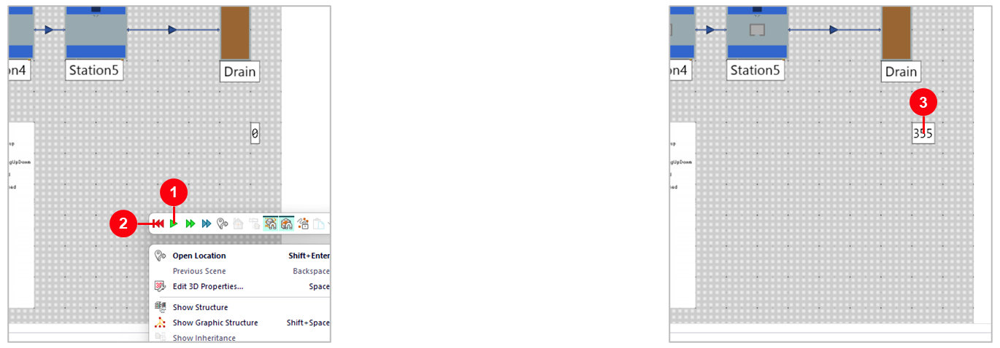
- 1Start/Stop Simulation — ปุ่มเขียวในแถบเครื่องมือที่ขึ้นตอนคลิกขวา
- 2Reset Simulation — ปุ่มแดง กลับไปเริ่มต้น ค่าบน Display กลับเป็น 0
- 3355 — ชิ้นที่เสร็จใน 1 ชั่วโมง อีก 5 ชิ้นยังอยู่ในเครื่อง (Work in Process)
ปุ่ม Start และ Reset เดียวกันนี้อยู่ที่ริบบอน Home › Event Controller ด้วย
ข้อความนำหน้า และรูปแบบตัวอักษร
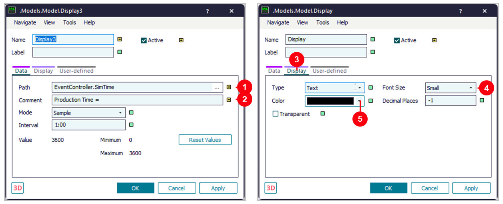
- 1Path — ป้ายเวลา =
EventController.SimTime - 2Comment — ข้อความหน้าตัวเลข เช่น "Production Time =" และ "FG ="
- 3แท็บ Display — รูปแบบของป้าย
- 4Font Size — ขนาดตัวอักษร
- 5Color — สีตัวอักษร แล้วกด
Apply
ป้าย FG: ใช้ Path =
Drain.statNumIn (ได้มาจากการลาก Drain) และ Comment "FG =" บน Frame จึงขึ้นเป็น FG = 355ขั้นที่ 3: วาง Chart ดูสถานะเครื่อง
- 1แท็บ User Interface
- 2Chart — คลิกไอคอนกราฟแท่ง
- 3คลิกใน Frame — วาง Chart ใต้ไลน์
- 4ลาก Station1 ไปปล่อยบน Chart
- 5Resource Statistics ใน Statistics Type (= สถานะของเครื่อง)
- 6
OK
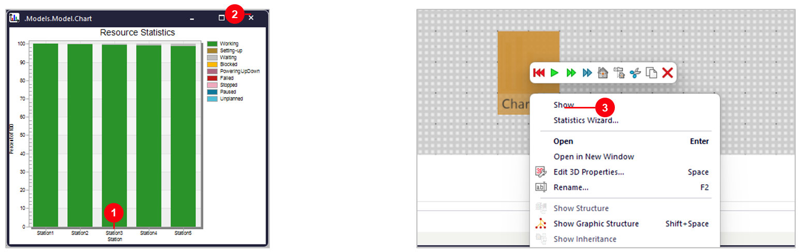
- 1Station1–5 — ลากทีละเครื่องมาปล่อยบน Chart ได้ 5 แท่ง (ครั้งต่อไปไม่ถาม Statistics Type)
- 2ปุ่ม × — ปิดหน้าต่าง Chart
- 3คลิกขวาที่ Chart ›
Show— เปิดหน้าต่างอีกครั้ง
ค่าของ Chart ที่ตั้งให้
- 1Collect Data — ติ๊กไว้ = เก็บข้อมูลระหว่างรัน
- 2Data Source = Input Channels — แสดงข้อมูลของ object ที่เลือก
- 3ปุ่ม Input Channels — รายการ Station1–5 ที่ลากมาวาง
- 4Mode = Sample, Interval 1:00 — เก็บค่าทุก 1 นาที
ไม่ต้องพิมพ์เอง: ลาก object มาวางบน Chart = เพิ่มเข้า Input Channels ให้เอง ใช้ปุ่มนี้เมื่ออยากลบหรือเรียงลำดับแท่ง
Chart แบบแบนบน Frame หรือแบบ 3D
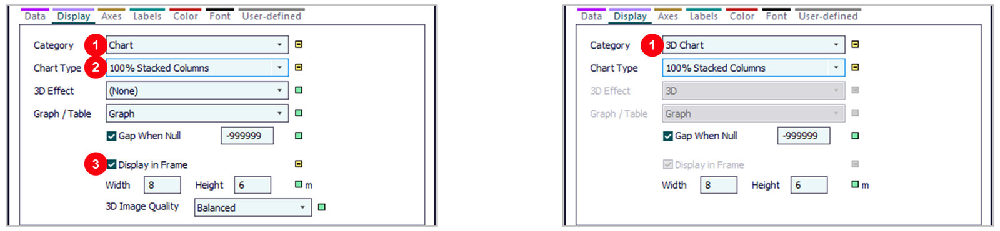
- 1Category —
Chart= กราฟแบนบน Frame (Model) ·3D Chart= ป้ายกราฟตั้งในฉาก 3D (Model2–Model5) - 2Chart Type = 100% Stacked Columns — แท่งละ 100% แบ่งสีตามสถานะ
- 3Display in Frame — ติ๊กไว้ = แสดงกราฟบน Frame แทนไอคอน
ระวัง: 3D Chart วาดใหม่ระหว่างรันแบบมีภาพเคลื่อนไหว ถ้ารันแบบไม่มีภาพเคลื่อนไหว กราฟจะว่าง
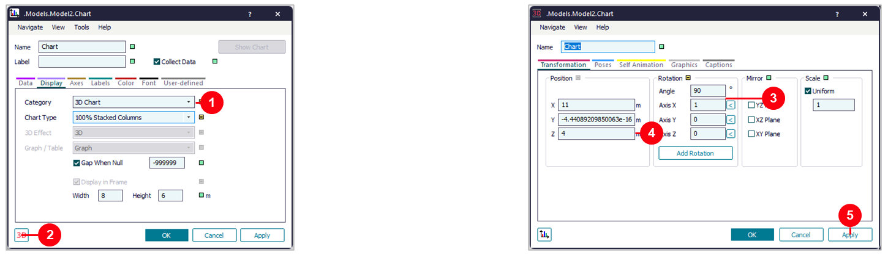
- 1Category = 3D Chart — Display in Frame ติ๊กให้เอง
- 2ปุ่ม 3D มุมซ้ายล่าง — เปิดหน้าต่าง 3D แท็บ Transformation
- 3Rotation: Angle = 90, Axis X = 1 — หมุน 90 องศารอบแกน X แผ่นกราฟจึงตั้งขึ้นจากพื้น
- 4Position Z = 4 m — ยกกราฟขึ้นจากพื้น (X, Y = ตำแหน่งบนพื้น)
- 5
Applyแล้วOK— ดูผลในมุมมอง 3D (ขั้นที่ 5)
ขั้นที่ 4: รัน Model 1 ชั่วโมง แล้วอ่านผล
- 1Production Time = 1:00:00 — ครบเวลาแล้วหยุดเอง
- 2FG = 355 — ชิ้นงานที่เสร็จใน 1 ชั่วโมง
- 3Chart เขียวเต็มทุกแท่ง — ทุกเครื่อง Working ~99–100%
ทำไมไม่ใช่ 360: Source ปล่อย 360 ชิ้น ตอนหมดเวลายังค้างอยู่ใน Station เครื่องละ 1 ชิ้น รวม 5 ชิ้น — ไลน์นี้สมดุล
ขั้นที่ 5: Model2 — Station3 ช้ากว่าเพื่อน 2 เท่า
- 1Station3 Processing Time = 0:20 — เครื่องอื่นยัง 0:10
- 2FG = 177 — ทั้งไลน์ได้แค่ครึ่งเดียว
คอขวด (Bottleneck): ทั้งไลน์เดินได้เร็วเท่าเครื่องที่ช้าที่สุด 3600 ÷ 20 = 180 ชิ้น ใกล้กับ 177 ที่วัดได้
3D Chart บอกว่าเครื่องไหนเป็นคอขวด
- 1Station1–2 สีเหลือง — Blocked ~50% ทำเสร็จแต่ส่งต่อไม่ได้
- 2Station3 เขียวเต็ม — Working ~99% = คอขวด
- 3Station4–5 สีเทา — Waiting ~51% รองานจากเครื่องก่อนหน้า
- 4ชื่อสถานะ — ดูสีจาก legend ด้านขวา
วิธีจำ: ก่อนคอขวด = เหลือง (Blocked) · หลังคอขวด = เทา (Waiting) · คอขวด = เขียวเต็มแท่ง
ขั้นที่ 6: Model3 — เพิ่ม Station32 ขนานกับ Station3
- 1Station3 — 0:20 เหมือนเดิม
- 2Station32 — เครื่องใหม่ 0:20 วางขนานกัน
- 3Connector 8 เส้น — Station2 ส่งไป 2 ทาง (Exit Strategy = Cyclic) แล้วรวมเข้า Station4
- 4FG = 354 — กลับมาเกือบเท่าไลน์สมดุล
ทำไมได้ผล: 2 เครื่อง × 20 วินาที = เฉลี่ย 10 วินาทีต่อชิ้น เท่ากับเครื่องอื่นในไลน์
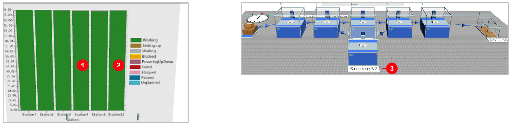
- 1ทุกแท่งสีเขียว — ไม่มีเครื่องถูกบล็อก หรือรองาน
- 2แท่ง Station32 — เครื่องใหม่อยู่ใน Input Channels ของ Chart แล้ว
- 3Station32 — วางหน้า Station3 ในฉาก 3D
คำถาม: แก้ได้ 177 → 354 แต่ต้องวางเครื่องเพิ่มและต่อเส้นแยกทาง มีวิธีที่ง่ายกว่านี้ไหม → ParallelStation (ขั้นที่ 7)
ขั้นที่ 7: ParallelStation แทน 2 เครื่อง
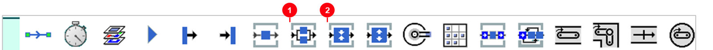
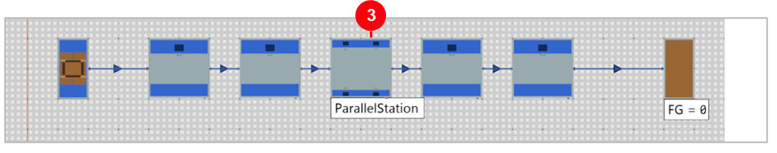
- 1Station — เครื่อง 1 ช่อง ทำทีละชิ้น
- 2ParallelStation — เครื่องหลายช่อง ทำหลายชิ้นพร้อมกัน
- 3วางแทน Station3 ต่อ Connector เข้า 1 ออก 1
ต่อเส้นน้อยลง: 2 เครื่องแยกใช้ Connector เข้า–ออก 4 เส้น ParallelStation ตัวเดียวใช้ 2 เส้น (Model3 8 เส้น → Model4 6 เส้น)
ขั้นที่ 8–9: ตั้งจำนวนช่อง และเวลาทำงาน
- 1X-Dimension = 2 — จำนวนช่องแนวนอน
- 2Y-Dimension = 1 — จำนวนแถว → 2 × 1 = 2 ช่อง
- 3Start Processing When Full — ติ๊กไว้ (ค่าเริ่มต้น) = รอให้ครบทุกช่องก่อนเริ่มทำ
ตามคู่มือ: ค่าเริ่มต้นคือติ๊ก When Full ไว้ ชิ้นใหม่เข้าได้เมื่อชุดเดิมทำเสร็จและออกหมดแล้ว
— ParallelStation ที่วางใหม่จาก Toolbox มีค่าเริ่มต้น 2 × 2 = 4 ช่อง ในไฟล์นี้ตั้งเป็น 2 × 1
- 1Times — แท็บตั้งเวลา
- 2Processing Time = 0:20 — ทุกช่องใช้ 20 วินาทีต่อชิ้น
คิดเร็ว: 2 ช่อง × 20 วินาที = เฉลี่ย 10 วินาทีต่อชิ้น เท่ากับเครื่องอื่นในไลน์ ควรได้ ~354 ชิ้น/ชม. เหมือน Model3
ขั้นที่ 10: Model4 — ได้แค่ 177 ทั้งที่มี 2 ช่อง
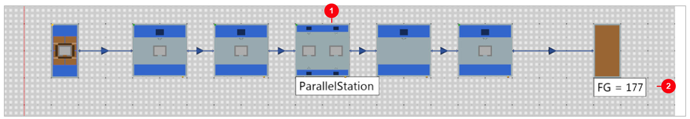
- 1ParallelStation — ติ๊ก When Full ไว้
- 2FG = 177 — เท่ากับ Model2 ที่มีเครื่องเดียว 20 วินาที
ทำไม: ต้องรอชิ้นที่ 2 เข้ามาให้ครบก่อนเริ่ม และรับชุดใหม่ได้เมื่อออกหมดแล้ว 2 ช่องจึงทำงานเหมือนเครื่องเดียว
- 1Station1–2 สีเหลือง — Blocked ~49% ส่งต่อไม่ได้
- 2ParallelStation — เขียว 50% เทา 50% = รอชิ้นให้ครบ 2 ช่อง
- 3Station4–5 สีเทา — Waiting ~51% รองาน
- 4ชื่อสถานะ — ดูสีจาก legend ด้านขวา
ต่างจาก Model2: คอขวดใน Model2 เขียวเต็มแท่ง แต่ ParallelStation ที่ติ๊ก When Full เสียเวลาครึ่งหนึ่งไปกับการรอ
ขั้นที่ 11: Model5 — เอาติ๊ก When Full ออก
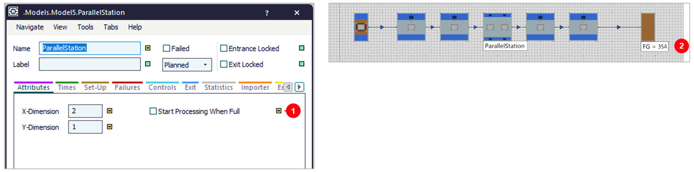
- 1Start Processing When Full — เอาติ๊กออก = เริ่มทำทันทีที่มีชิ้นเข้าช่อง ไม่ต้องรอให้ครบ
- 2FG = 354 — เท่ากับ 2 เครื่องแยกใน Model3 แต่ต่อเส้นน้อยกว่า
จำง่าย: ParallelStation ที่ทำงานต่อเนื่องในไลน์ → เอาติ๊ก When Full ออก · ติ๊กไว้เมื่อต้องการให้ทำพร้อมกันทั้งชุด เช่น เตาอบ
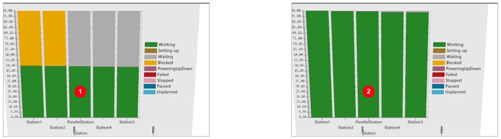
- 1ติ๊ก When Full — ParallelStation ทำงาน 50% · ได้ 177 ชิ้น/ชม.
- 2เอาติ๊กออก — ทำงาน 99% ทุกแท่งเขียว · ได้ 354 ชิ้น/ชม. (+100%)
บทเรียน: ก่อนซื้อเครื่องเพิ่ม ให้ดูก่อนว่าเครื่องเดิมทำงานจริงกี่ % — เปลี่ยนแค่ติ๊กเดียว ผลเพิ่มเป็นเท่าตัวโดยไม่ต้องเพิ่มเครื่อง
สรุป 5 Frame (จำลอง 1 ชั่วโมง)
| Frame | สิ่งที่ต่าง | Connector | FG (ชิ้น/ชม.) | เครื่องจุด Station3 ทำงาน |
|---|---|---|---|---|
Model | ทุกเครื่อง 0:10 | 6 | 355 | ~99% ไลน์สมดุล |
Model2 | Station3 = 0:20 | 6 | 177 | 99% = คอขวด |
Model3 | เพิ่ม Station32 (0:20) ขนานกับ Station3 | 8 | 354 | ~99% ทั้ง 2 เครื่อง |
Model4 | ParallelStation 2 ช่อง 0:20 ติ๊ก When Full | 6 | 177 | 50% (รอครึ่งเวลา) |
Model5 | ParallelStation 2 ช่อง 0:20 ไม่ติ๊ก | 6 | 354 | ~99% |
Model3 กับ Model5 ได้ผลเท่ากัน แต่ Model5 ใช้ object และเส้นน้อยกว่า ส่วน Model4 แสดงว่าค่าเริ่มต้นที่ไม่ได้ตรวจ ทำให้ผลเหลือครึ่งเดียว
ลองเอง
เดาก่อนว่า FG จะเป็นเท่าไร แล้วรันดู — แก้ทีละค่าจากค่าเดิม และกด Reset ก่อน Start ทุกครั้ง
ลองเอง 1: เปลี่ยนเวลาแล้วดู FG (Model–Model3)
| Frame | ลองเปลี่ยน | FG หลังรัน | ทำไม |
|---|---|---|---|
Model | Station1 = 0:20 | 177 | คอขวดอยู่ต้นไลน์ ผลเท่ากัน |
Model | Station5 = 0:20 | 177 | คอขวดอยู่ท้ายไลน์ ผลก็เท่ากัน |
Model2 | Station3 = 0:15 | 237 | 3600 ÷ 15 = 240 |
Model2 | Station3 = 0:10 | 355 | กลับเป็นไลน์สมดุลเหมือน Model |
Model3 | Station3 และ Station32 = 0:30 | 236 | 2 เครื่อง ÷ 30 วินาที = 15 วินาทีต่อชิ้น |
ลองเอง 2: เปลี่ยนช่องและเวลาใน Model4
| ลองเปลี่ยนที่ ParallelStation | FG หลังรัน | ทำไม |
|---|---|---|
| เอาติ๊ก When Full ออก | 354 | เหมือน Model5 |
| 4 ช่อง (X = 4) × 0:40 ติ๊ก When Full | 140 | ต้องรอให้ครบ 4 ชิ้น ยิ่งช่องมากยิ่งรอนาน |
| 4 ช่อง × 0:40 ไม่ติ๊ก | 352 | เฉลี่ย 10 วินาทีต่อชิ้น เท่าเครื่องอื่น |
| 2 ช่อง × 0:10 ติ๊ก When Full | 236 | เครื่องเร็วขึ้น 2 เท่า แต่ยังแพ้ไลน์ปกติ (355) |
| 3 ช่อง × 0:20 ไม่ติ๊ก | 354 | ช่องเพิ่มไม่ช่วย เครื่องอื่นจำกัดที่ 10 วินาที |
ปัญหาที่พบบ่อย และวิธีแก้
| อาการ | วิธีแก้ |
|---|---|
| 3D Chart ว่างหลังรัน | รันด้วยปุ่ม Start แบบมีภาพเคลื่อนไหว 3D Chart จะวาดใหม่ระหว่างรัน |
| Planning View มองไม่เห็น 3D Chart | 3D Chart ตั้งขึ้นในฉาก 3D: ปิด Planning View แล้วหมุนมุมกล้อง |
| Chart ไม่มีแท่งของเครื่องใหม่ | ใส่เครื่องใหม่ (Station32, ParallelStation) ใน Input Channels ของ Chart |
| เพิ่มเครื่องแล้ว FG ไม่เพิ่ม | ตรวจ Connector เข้า–ออกเครื่องใหม่ให้ครบ |
| ParallelStation รับงานชุดเดียวแล้วรอนาน | แท็บ Attributes › เอาติ๊ก Start Processing When Full ออก |
| จำนวนช่องไม่ตรงที่ต้องการ | จำนวนช่อง = X-Dimension × Y-Dimension (ค่าเริ่มต้น 2 × 2 = 4) |
| เพิ่มช่องแล้ว FG ไม่เพิ่ม | คอขวดย้ายไปเครื่องอื่นแล้ว ดูสีใน Chart |
| กด Start แล้วผลไม่เริ่มจากศูนย์ | กด Reset (ปุ่มแดง) ก่อน Start ทุกครั้ง |
คำถามฝึกคิด: ในลองเอง 1 ทำไมการตั้ง Station1 หรือ Station5 เป็น 0:20 ได้ FG 177 เท่ากับตั้ง Station3 ทั้งที่อยู่คนละตำแหน่งในไลน์?
เฉลย: เพราะทั้งไลน์เดินได้เร็วเท่าเครื่องที่ช้าที่สุดเสมอ ไม่ว่าคอขวดจะอยู่ต้น กลาง หรือท้ายไลน์
สิ่งที่ต่างคือสีใน Chart — เครื่องก่อนคอขวดจะเป็นสีเหลือง (Blocked) เครื่องหลังคอขวดเป็นสีเทา (Waiting)
ถ้าคอขวดอยู่ Station1 ก็จะไม่มีสีเหลืองเลย มีแต่สีเทาตามหลัง